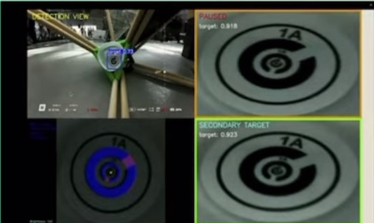
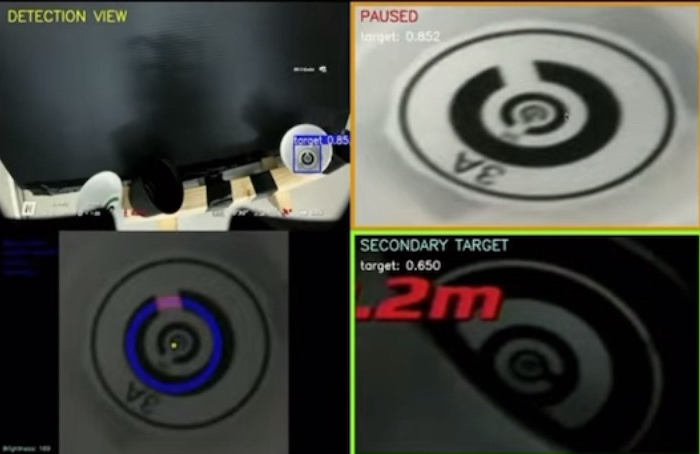
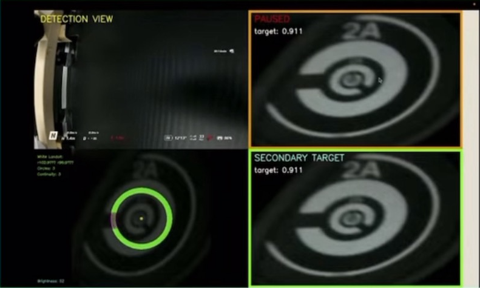
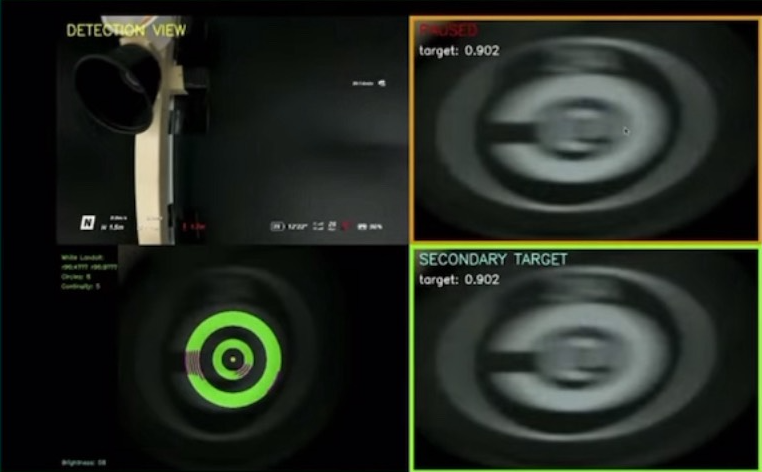

UI構成
- 左上: YOLO によるリアルタイム認識
- 右上: 認識した画像をノイズ除去し拡大表示
- 右下: 二物体同時認識時の拡大表示（右上と同仕様）
- 左下: ランドルト環の穴の位置を画像処理して表示
ギャラリー（クリックで拡大）




アルゴリズム概要
本システムは、YOLO による検出結果を用いながら、ランドルト環の穴（切れ目）方向を HSV空間での明度判定と同心円サンプリングによって高精度に推定します。以下の Python ロジックに基づいて設計されています。
- 明度解析: 画像全体の平均明度から背景（白/黒）を推定し、白ランドルト/黒ランドルト双方に対応（閾値: BLACK_THRESHOLD=80, WHITE_THRESHOLD=115）。
- HSV変換: BGR→RGB→HSV（OpenCV）へ変換。OpenCV の H は 0-179 なので 0-359 に補正。
- 同心円サンプリング: 画像中心から半径を変えて円周上の画素を多数サンプリング（半径は外周を除外しつつ LANDOLT_NUM_CIRCLES=20 で分割）。
- 色一致率: 各円で「ランドルト環色」に一致する画素率（match_ratio）を算出し、
LANDOLT_MATCH_RATIO_THRESHOLD=0.8以上を有効円と判定。 - ギャップ検出: 一致しない角度を時系列に連結してギャップ区間に変換（最小ギャップ角
LANDOLT_MIN_GAP_SIZE=5°）。ギャップ中心角を時計時刻（0-11時）へマッピング。 - 黒/白の自動選択: 有効円の連続性スコアと個数を比較し、黒ランドルト/白ランドルトのどちらを採用するか自動決定。
- 可視化: 元画像へ半透明オーバーレイ（
LANDOLT_OVERLAY_ALPHA=0.6）。ランドルト環部を青/緑、ギャップ部を赤/マゼンタで描画し、円弧と時刻ラベルを表示。
操作方法と表示
- 入力: カメラ（CAP_PROP で 1280x720, 30FPS に設定）。YOLO モデル（例:
YOLO('target10_9.pt')）で物体検出。 - 四分割ビュー:
- 左上: 最高信頼度ターゲットのクロップ（0.9秒ごと更新、独立に一時停止可）。
- 右上: 検出結果（全体）表示、Enter キーで全画面切替。
- 左下: 第2候補ターゲット（存在すれば）を表示、独立に一時停止可。
- 右下: 左上ターゲットに対するランドルト環オーバーレイと解析情報。
- キー操作:
1=左上一時停止/保存、2=左下一時停止/保存、Enter=右上全画面/四分割切替、q=終了。 - 保存: 一時停止時に、検出全体画像・左上オリジナル・HSVオーバーレイなどを
randoruto-wrs/session_YYYYMMDD_HHMMSS/に自動保存（連番・時刻付きファイル名）。 - 注記: 明度に依存して黒/白ランドルトを自動選択。ギャップは角度連結後に 12時間表記へ変換して直感的に可視化します。